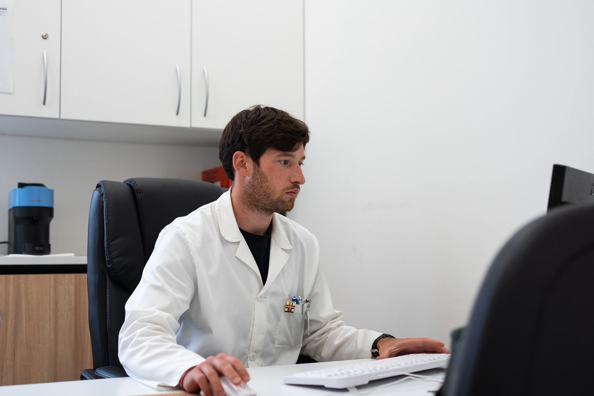

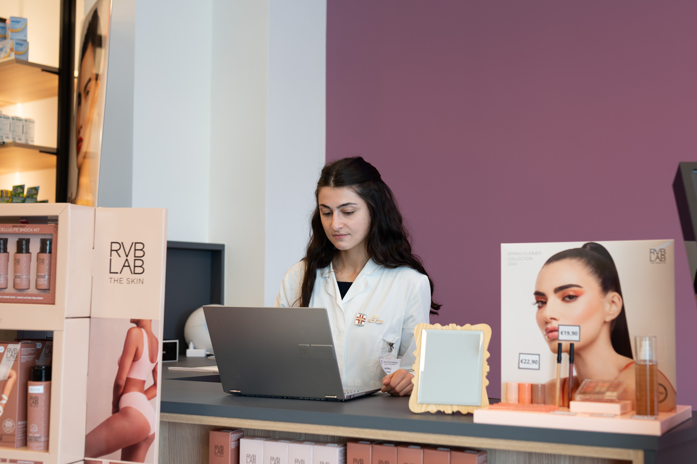
La Farmacia Danesi è attiva da molti anni per offrire alla sua clientela non solo una gamma completa di medicinali per la persona e per l'utilizzo veterinario, ma anche un vastissimo assortimento di prodotti per la cura del benessere e della bellezza di tutta la famiglia. La nostra farmacia è soprattutto sinonimo di servizi alla persona. Presso di noi puoi infatti sottoporti a consulenze specialistiche, esami di telemedicina (elettrocardiogramma ed holter pressorio o cardiaco),autoanalisi del sangue (apparecchio validato dagli Spedali Civili di Brescia e dall'Università per gli studi di Brescia), preparazioni galeniche e trattamenti estetici nella nostra nuova cabina estetica. Il nostro team si avvale di collaboratori preparati e competenti.
Servizi e consulenze a Timoline di CorteFranca
La Farmacia Danesi offre numerosi servizi, tra cui: Telemedicina e autoanalisi: per monitorare la propria salute in modo semplice e veloce, grazie a servizi come holter cardiaco e pressorio, ECG, analisi del sangue e delle urine. Cabina estetica: per prendersi cura della propria bellezza con trattamenti personalizzati e consulenze specializzate. Vaccinazioni: per proteggere la propria salute e quella dei propri cari, con vaccini contro il Covid-19 e l'influenza. Tamponi antigenici rapidi Covid-19: per diagnosticare l'infezione in modo rapido e affidabile. Assistenza farmaceutica: per ricevere consigli personalizzati sui farmaci e sui prodotti più adatti alle proprie esigenze. Farmacia veterinaria: per la cura e il benessere degli animali domestici
Teledermatologia
Hai notato un neo sospetto, una macchia o una lesione cutanea da tenere sotto controllo? Ora puoi farlo comodamente nella nostra farmacia, grazie al nuovo servizio di teledermatologia: un sistema innovativo che consente di eseguire fotografie cliniche ad alta definizione della pelle, che verranno inviate in modo sicuro a dermatologi specializzati per una valutazione professionale. Un servizio comodo, veloce e affidabile, realizzato in collaborazione con professionisti della salute, direttamente in farmacia. 📍 Vieni a trovarci o chiamaci per maggiori informazioni e per prenotare il tuo servizio! 📌 Farmacia Danesi – Al tuo fianco per la salute, ogni giorno.
Il futuro è quello della personalizzazione della cura. Infatti spesso il farmacista deve confrontarsi con il medico o con il veterinario per adattare un determinato farmaco al paziente. Per questo la farmacia Danesi di Corte Franca ha investito risorse per la creazione del nuovo laboratorio per le preparazioni galeniche, attrezzato con le più moderne tecnologie e gestito da personale preparato e sempre aggiornato sulle nuove tecniche di preparazione. Se hai bisogno di una preparazione particolare compila il form e carica nell'apposita sezione la ricetta medica (obbligatoria); saremo lieti di comunicarti la fattibilità, i costi ed i tempi di preparazione del prodotto che ci hai richiesto.
Scopri i nostri prodotti
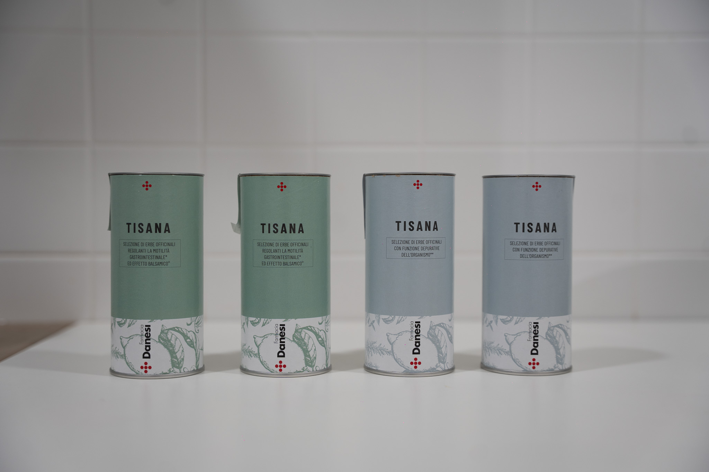
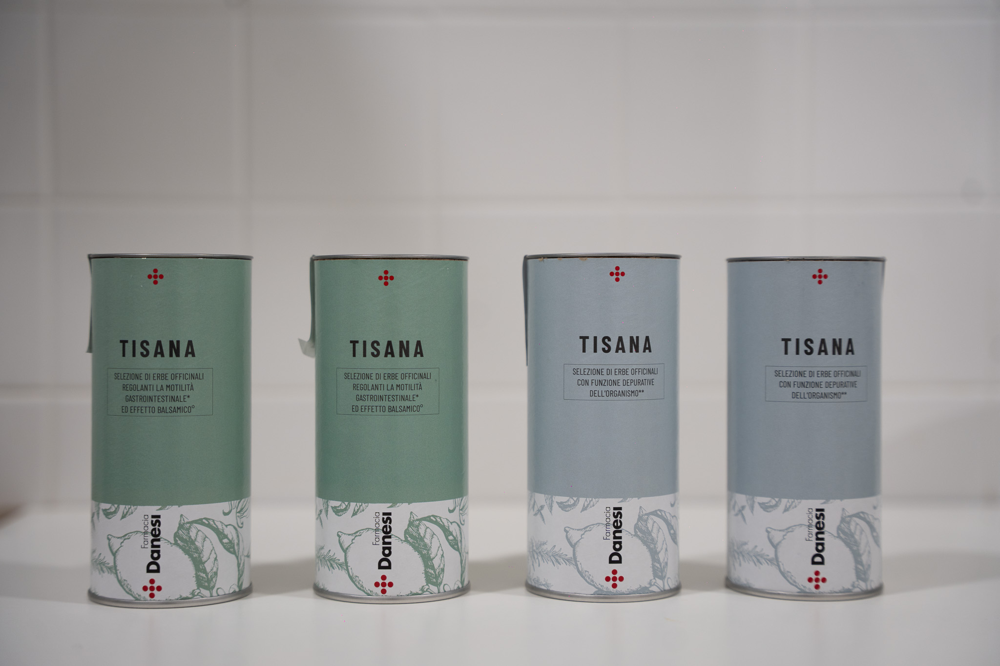
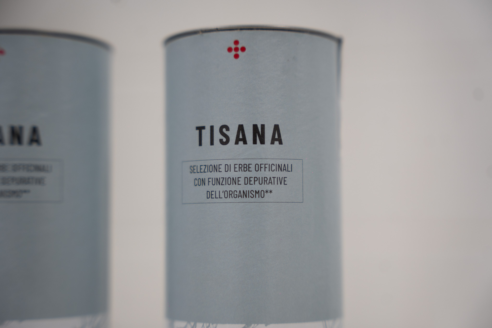
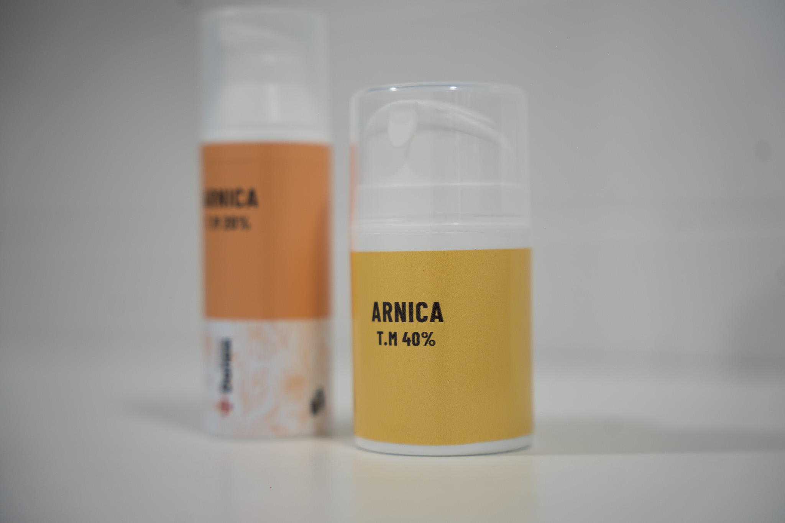
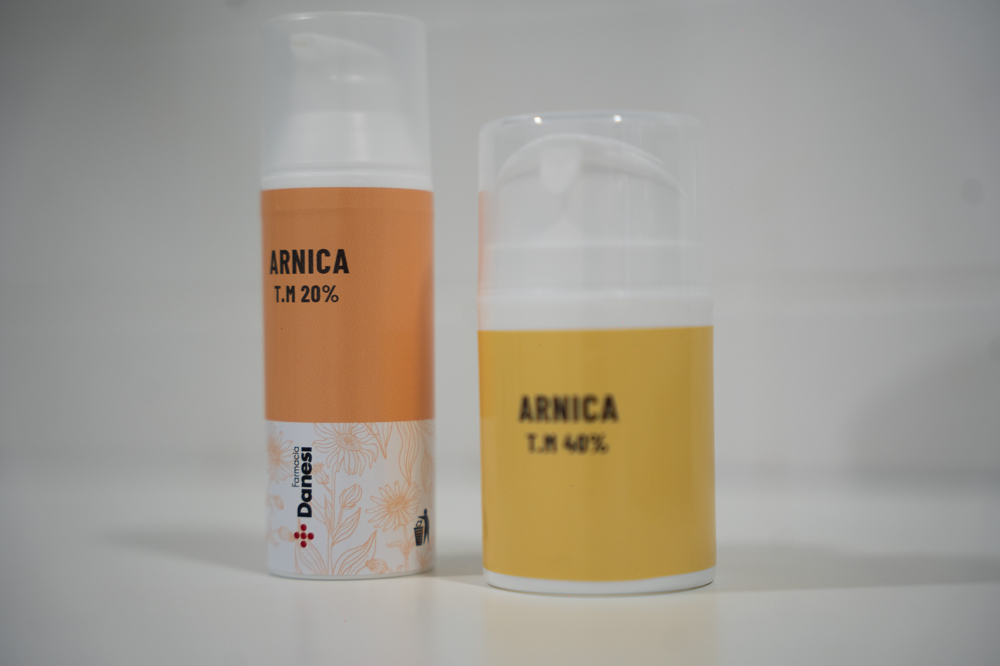
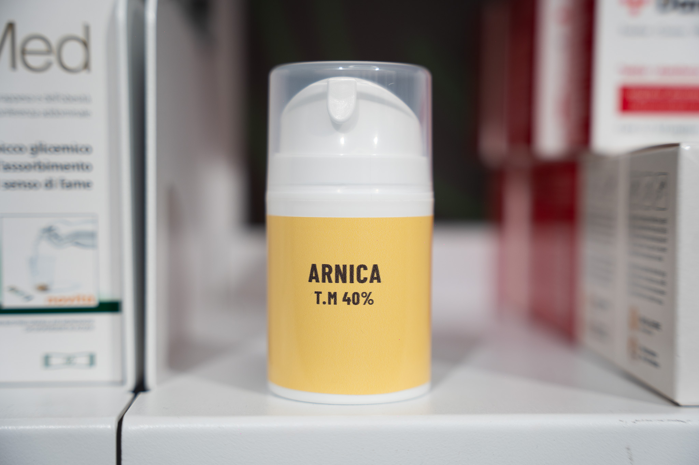
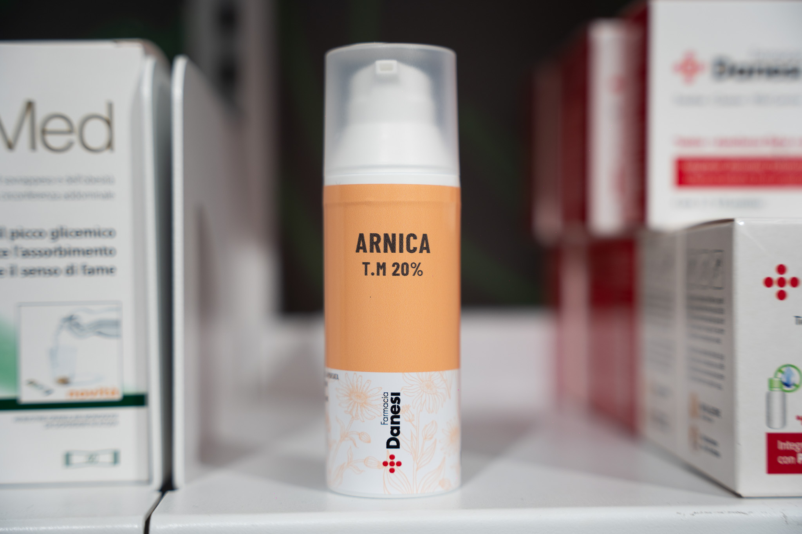
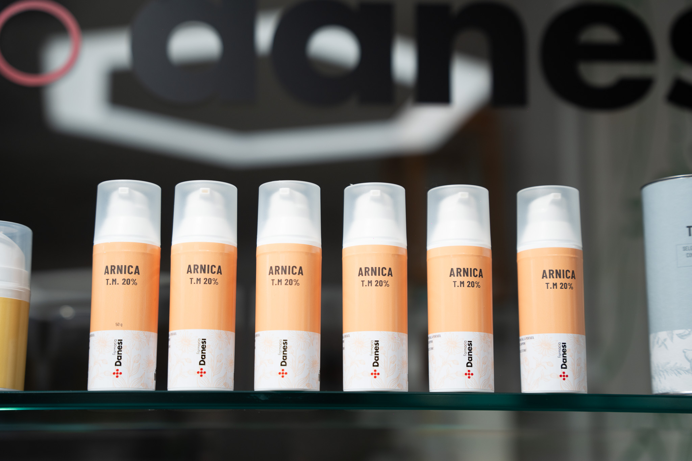
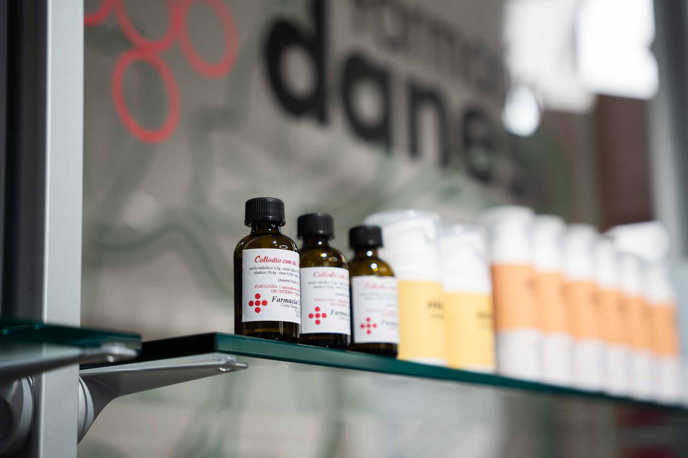
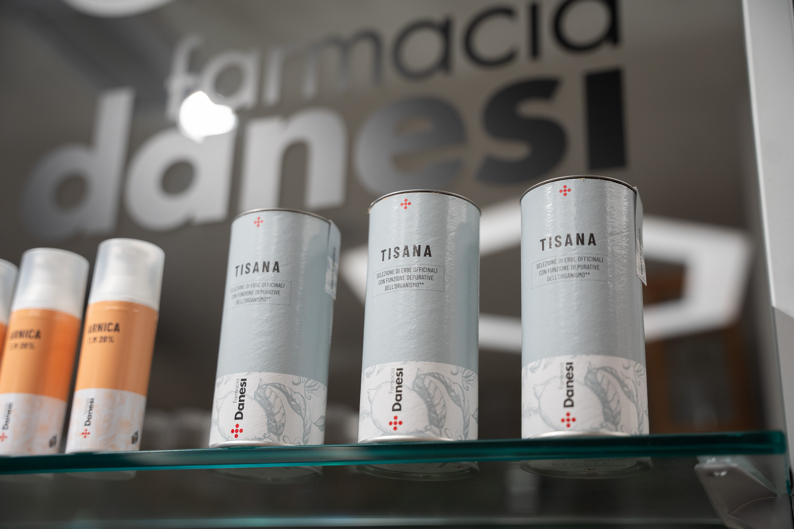
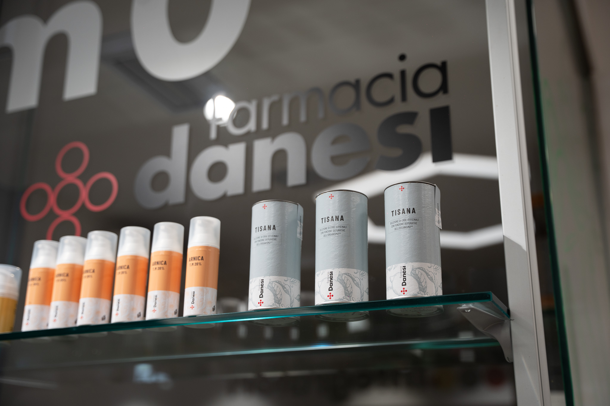
Salute è sinonimo di benessere. Per questo motivo abbiamo deciso di dotare la farmacia di uno spazio dedicato all'estetica. L'idea è quella di coniugare prodotti di altissima qualità con le tecnologie estetiche più all'avanguardia in una cabina moderna e rilassante. Oltre ai tradizionali trattamenti estetici (praticati sempre con utilizzo di prodotti d'alta qualità) i nostri fiori all'occhiello sono i trattamenti anti-age con radiofrequenza, l'epilazione definitiva con laser diodo e lo sbiancamento dentale cosmetico. Richiedi una consulenza presso la Farmacia Danesi di Timoline di Corte Franca.